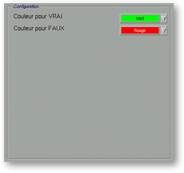

<!-- Documentation XQuad (c)1995-2000 AXENE contact axene@axene.org>
<html>

<head>
<title>Numeric Format: Colors</title>
</head>

<body BGCOLOR="#FFFFFF" BACKGROUND="Images/back.gif" TEXT="#000000">

<p ALIGN="right">  </p>

<p align="center"><br>
<a NAME="box_numfmt_colors"></p>

<h2 align="center">Format color configuration</h2>
</a>

<p>When you select the &quot;<i>Colors</i>&quot; button in the horizontal bar (upper right
portion of the 'Numeric Format' dialog box), the &quot;<i>Configuration</i>&quot; section
is different in accordance with the format type.<br>
<br>
</p>

<hr>

<p><br>
</p>
<a NAME="bnf_colors_1">

<h3>Format: Number, Unit, Scientific, Percentage</h3>
</a>

<p>If the format type is &quot;<i>Numbers</i>&quot;, &quot;<i>Units</i>&quot;, &quot;<i>Scientific</i>&quot;,
or &quot;<i>Percentages</i>&quot;, the &quot;<i>Configuration</i>&quot; section looks
like:</p>

<p align="center"> <br>
<small><i>Screen snap: &quot;Configuration&quot; section</i></small></p>

<p>This section is composed, from top to bottom, by: 

<ul>
  <li><a NAME="list_color_pos">The &quot;Color for positive numbers&quot; pulldown list allows
    to <b>choose the color which will be used to draw positive numbers</b>. The color list can
    be modified through the '</a><a HREF="Box_Color.html">Color Preparation' dialog box.
    &quot;<i>Auto</i>&quot; allows to not force a particular color, then the format will used
    the color from the style defined in the '</a><a HREF="Box_Font.html">Font Composition</a>'
    dialog box.<br>
    &nbsp;</li>
  <li><a NAME="list_color_neg">The &quot;Color for negative numbers&quot; pulldown list allows
    to <b>choose the color which will be used to draw negative numbers</b>. The color list can
    be modified through the '</a><a HREF="Box_Color.html">Color Preparation' dialog box.
    &quot;<i>Auto</i>&quot; allows to not force a particular color, then the format will used
    the color from the style defined in the '</a><a HREF="Box_Font.html">Font Composition</a>'
    dialog box.</li>
</ul>

<p><br>
<br>
</p>

<hr>

<p><br>
</p>
<a NAME="bnf_colors_2">

<h3>Format: Boolean</h3>
</a>

<p>If the format type is &quot;<i>Boolean</i>&quot;, the &quot;<i>Configuration</i>&quot;
section looks like:</p>

<p align="center"> <br>
<small><i>Screen snap: &quot;Configuration&quot; section</i></small></p>

<p>This section is composed, from top to bottom, by: 

<ul>
  <li><a NAME="list_color_true">The &quot;Color for TRUE&quot; pulldown list allows to <b>choose
    the color which will be used to draw numbers with the value TRUE</b>. The color list can
    be modified through the '</a><a HREF="Box_Color.html">Color Preparation</a>' dialog box.
    &quot;<i>Auto</i>&quot; allows to not force a particular color, then the format will used
    the color from the style defined in the '<a HREF="Box_Font.html">Font Composition</a>'
    dialog box.<br>
    &nbsp;<i></li>
  <li><a NAME="list_color_false">The &quot;Color for FALSE&quot; pulldown list allows to <b>choose
    the color which will be used to draw numbers with the value FALSE</b>. The color list can
    be modified through the '</a><a HREF="Box_Color.html">Color Preparation</a>' dialog box.
    &quot;<i>Auto</i>&quot; allows to not force a particular color, then the format will used
    the color from the style defined in the '<a HREF="Box_Font.html">Font Composition</a>'
    dialog box.</li>
</ul>

<p><br>
</p>

<hr>

<p ALIGN="right"></p>
</i>
</body>
</html>
